Korenmarkt 16, Arnhem
Le Grand Café
Al sinds 1976 een geliefde ontmoetingsplek voor jong en oud. Een kop koffie en de krant, lunch in de serre, een lange borrel of diner met vrienden. Tot in de late uurtjes.
Een ware klassieker met een moderne twist
We geloven niet in ingewikkeld, maar gaan voor een authentiek fijne sfeer waarin ontspannen en samenkomen centraal staan. Een plek waar je smakelijke en herkenbare gerechten bestelt, evenals fijne borrelplanken en verrassende specials.
Waar je graag naar binnen loopt voor een kop koffie en de krant, maar ook op vrijdagavond neerstrijkt met je vrienden of je eerste date mee naartoe neemt. In het hart van de stad, op de Korenmarkt.
Van de eerste koffie tot de laatste ronde
Bij Le Grand Café doen we zes dagen per week waar we blij van worden.
-
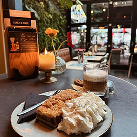
vanaf 10.00Koffie
Er gaat niks boven een goede kop koffie, het liefst met taart van de lokale patisserie. Lees de laatste nieuwtjes aan de stamtafel of trek je terug in de loungehoek om een paar uurtjes te flexwerken.
-
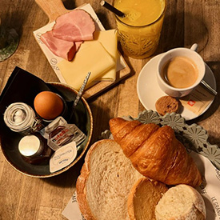
10.00-17.00Ontbijt en lunch
Dikbelegde broden, frisse salades en verse soepen, met liefde bereid door onze chef. Aan de bar, in de serre of op het terras: de keuze is aan jou.
-
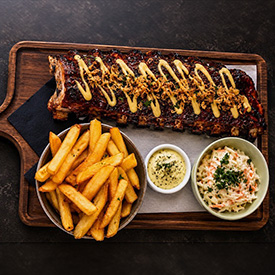
17.00-21.30Diner
Herkenbare gerechten met frisse, verrassende twists. Lekker lang tafelen met het driegangenmenu of een snelle daghap om de week te breken. Vraag de chef naar zijn dish of the day.
-
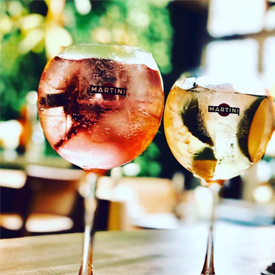
tot 01.00 of 02.00Borrel
Soepele huiswijnen, fijne tapbieren, exclusieve champagne en een uitgebreide rijpkast. Toe aan wat sterkers? Neem een kijkje op de cocktailkaart. Lekkernijen bestel je ook na 21.30.
Menukaart
Vraag gerust naar onze allergenenkaart.
Van 17.00 tot 21.30 uur
Voorgerechten
- CarpaccioMet truffelmayo, pijnboompitten, Parmezaan en zongedroogde tomaatjes. Ook als hoofdgerecht te bestellen (+2,50)12,50
- TomatensoepHuisgemaakt, met verse kruiden en een toef zure room on top6,50
Desserts
- American pancakes (3 stuks)Drie fluffy pancakes met chocoladesaus of vers fruit met aardbeiensaus. Met vanille-ijs en slagroom9,50
- Huisgemaakte appeltaartWarm geserveerd, met romig vanille-ijs en een toef slagroom7,50
Hoofdgerechten
- Burger Le Grand CaféSappige Angus beef burger met truffelmayonaise, tomatensalsa en ui18,50
- Sticky spare-ribsGelakt met een sticky BBQ-glaze naar keuze (sweet of spicy), coleslaw. Keuze uit knoflooksaus of smokey BBQ-saus18,50
- Crispy spicy chicken burgerKrokante kippendij met gesmolten cheddar, sla, tomaat en een pittige crispy sambal-mayo17,50
- Jack's burgerSmashed double burger met whiskeysaus, cheddar, knapperige bacon, tomaat en sla19,00
- Vegetarische burgerOesterzwamburger met gebakken champignons, sla en smokey BBQ-saus16,50
- SatéVarkenshaassaté met satésaus, Indische boontjes en kroepoek17,50
- Spicy drunken shrimpGamba's uit de oven met knoflookolie, rode peper en brood16,50
- Thaise curryZacht gegaarde sucade met Thaise currysaus. Keuze uit rijst of friet16,50
Van 10.00 tot 17.00 uur
Brood
- American chicken pancakesFluffy pancakes met kipfilet, bacon, kaasroomsaus of ahornsiroop11,50
- CarpaccioBrood belegd met carpaccio, rucola, truffelmayo en Parmezaan13,00
- Club sandwichMet krokant spek, gerookte kipfilet, kerriemayonaise, komkommer, tomaat en chips13,75
- Sandwich zalmGerookte zalm met crème fraîche, tomatentapenade en frisse sla15,75
- Twee krokettenGoudbruine kroketten met brood, mosterd en boter12,75
- Twee oesterzwamkrokettenVegetarische kroketten gevuld met oesterzwamragout, brood, mosterd en boter12,75
- Uitsmijter ham en kaasDrie eieren op wit of bruin brood, royaal belegd met ham en gesmolten kaas. Extra spek +1,0012,00
- Brioche pulled chickenBriochebol met sappige pulled chicken, frisse koolsla en krokante sambal-mayo voor een licht pittige kick12,50
- WrapGevuld met hummus, paprika, avocado, rode ui, sla en knoflooksaus12,00
- BLT sandwichAll time classic: bacon, tomaat, sla en mayo10,00
Lekkere dikke tosti's
- ClassicHam en/of kaas met ketchup6,50
- Tuna meltMet tonijnsalade, kaas en krokante sambalmayonaise7,00
Soep
- TomatensoepHuisgemaakt, met verse kruiden en een toef zure room on top6,50
Lunchsalades
- Salade crispy chickenMet krokante kip, Parmezaan, croutons, tomaat, komkommer en tzatziki-dressing15,50
- Gerookte zalmSalade met gerookte zalm, garnalen, guacamole en sesamdressing16,50
De salades worden geserveerd met brood.
Warme gerechten
- Burger Le Grand CaféSappige Angus beef burger met truffelmayonaise, tomatensalsa en ui18,50
- Crispy spicy chicken burgerKrokante kippendij met gesmolten cheddar, sla, tomaat en een pittige crispy sambal-mayo17,50
- Jack's burgerDouble smashed burger met whiskeysaus, cheddar, knapperige bacon, tomaat en sla19,00
De burgers worden geserveerd met friet en mayonaise.
Ook na 21.30 uur
Warm en knapperig
- Bitterballen6 stuks8,50
- Bitterballen12 stuks17,00
- Vegetarische bitterballen van Cas & Kas6 stuks6,50
- Kaastengels van Topking10 stuks8,00
- Tempura garnalen6 stuks9,00
- Bittergarnituur20 stuks18,50
- Nacho'sMet kaas, crème fraîche, guacamole en spicy salsa10,50
- Nacho's pulled chickenMet kaas, crème fraîche, guacamole, spicy salsa en pulled chicken11,75
- Brood om te delenMet huisgemaakte knoflooksaus en kruidenboter7,75
- Groene olijven6,00
Planken met koude en warme lekkernijen
- Le Grand Café borrelplankRijk gevulde plank met koude en warme lekkernijen20,50
- BorrelplankjePlankje met koude en warme lekkernijen12,50
- Vegetarisch borrelplankjeMet onder andere kaastengels, vegetarische bitterballen en koude lekkernijen12,50
- Vleesplankje3 soorten vlees met brood10,50
- Asian borrelplank15 stuks met gyoza, dim sum, tempura garnalen, yakitori bites, kroepoek en satésaus19,50
Voor de kleintjes
- Kroket met frietjes6,50
- American pancakesMet schenkstroop en poedersuiker5,50
- Hamburger met frietjesMet ketchup en mayonaise10,00
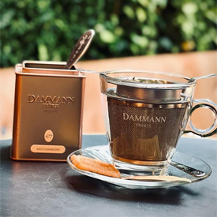
High tea bij Le Grand Café
Toe aan een gezellige middag genieten? We verzorgen een uitgebreide en sfeervolle high tea voor jong en oud: onbeperkt diverse theesoorten, belegde warme en koude broodjes en diverse zoetigheden en lekkernijen. Perfect voor een middag met vrienden, familie, collega's of een speciale gelegenheid.
- Prijs
- €24,50 per persoon
- Te bestellen
- van 11.30 tot 16.00 uur
- Reserveren
- minimaal twee dagen van tevoren
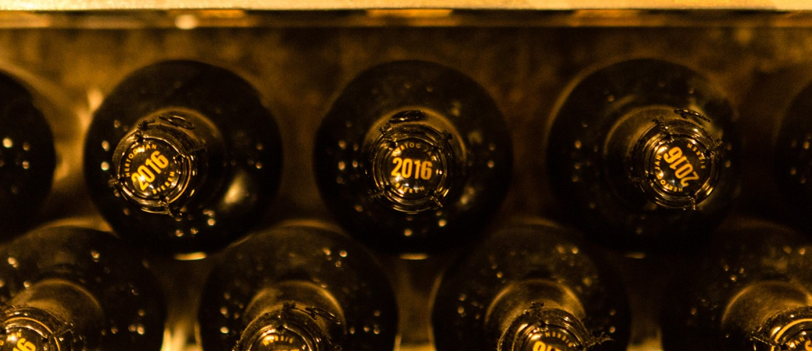
De rijpkast
Een fles op jouw naam, in onze 9 meter hoge Hertog Jan Rijpkast.
Het kroonjuweel van Hertog Jan is de Grand Prestige, gebrouwen met een mengsel van vier moutsoorten. In 2001 vond meesterbrouwer Gerard van den Broek een paar oude flessen in de kelders van de brouwerij. Het bier bleek nog prima drinkbaar; de smaak was te vergelijken met een vintage port. Een bier dat rijker wordt door het te bewaren.
Bij ons liggen talloze flessen te rusten. Eén ervan kun je voor jezelf of als persoonlijk cadeau op naam apart laten leggen. Op een door jou gekozen moment openen we de fles en serveren we er een passend hapje bij.
Vraag naar een fles op naamDe 'Le' staat er niet zomaar
In 1976 opende Le Grand Café de deuren en groeide uit tot een geliefde ontmoetingsplek voor Arnhemmers en stadsbezoekers. In de loop der jaren onderging de zaak meerdere metamorfoses, waarbij het warme karakter altijd het uitgangspunt bleef. Een klassiek grand café met een moderne twist, waar eenvoud, kwaliteit en saamhorigheid centraal staan.
It's a family thing
We runnen de zaak als een waar familiebedrijf. Jarenlange kennis en ervaring gemixt met frisse blikken en een jeugdige visie.
Het hart van de stad
Je vindt ons op de Korenmarkt, het populairste uitgaansgebied van Arnhem. In de weekenden bruist het er en worden regelmatig events georganiseerd. Op ons winterproof terras verveel je je geen moment.
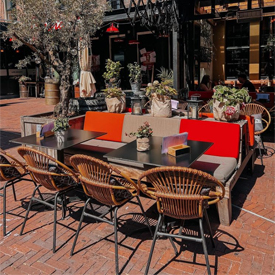
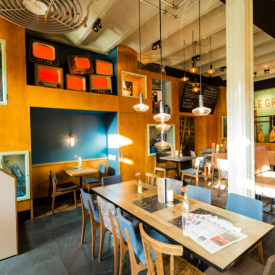
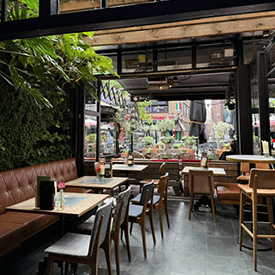
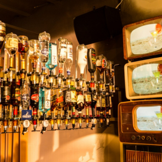
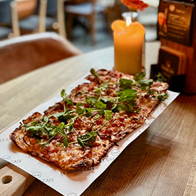
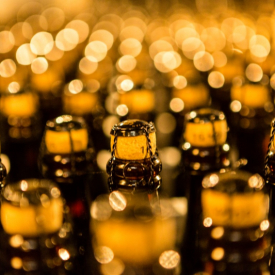
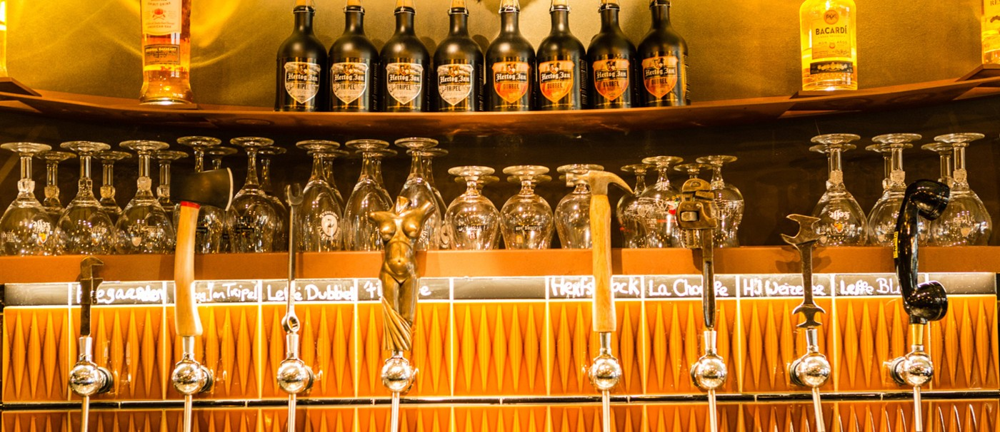
Reserveren
Een borrelhap of zakenlunch, vers gebak of late brunch. Kleine hap of groot diner, met tien vrienden of alleen. Een kop koffie en de krant, cocktails met je zielsverwant. Neem je leukste vrienden mee, in Arnhem naar Le Grand Café.
Vanaf 9 personen graag telefonisch reserveren: 026 442 62 81.
Bij ons werken?
We zoeken enthousiaste collega's voor in de keuken en de bediening. Bij Le Grand Café werk je op een van de meest bruisende plekken van Arnhem: geen dag is hetzelfde, je ontmoet elke dag nieuwe mensen en je komt in een hecht team waarin jong en oud elkaar versterken.
Wandel gerust binnen om een sollicitatieformulier op te halen, of stuur je motivatie direct per e-mail. Hopelijk zien we je gauw.
Stuur ons een e-mailKom langs
Korenmarkt 16
6811 GV Arnhem
026 442 62 81
info@legrandcafe.nl
Wil je reserveren of heb je een andere vraag? We staan je telefonisch graag te woord.
Route plannenOpeningstijden
| Maandag | gesloten |
|---|---|
| Dinsdag | 10.00-01.00 |
| Woensdag | 10.00-01.00 |
| Donderdag | 10.00-02.00 |
| Vrijdag | 10.00-02.00 |
| Zaterdag | 10.00-02.00 |
| Zondag | 11.00-01.00 |